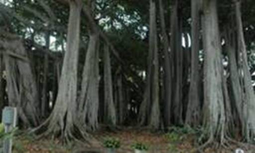

Вступление
Основная функция корня – всасывание воды и минеральных веществ.
На сухих полях длина корней пшеницы достигает 2,5 м, а на увлажненных – 0,5 м. Но они гораздо гуще. Основное условие – увлажненность почвы.
В тундре корни расположены у поверхности, а сами растения низкорослые. Это связано с низкой питательностью почвы и наличием вечной мерзлоты. Корни карликовой березы (см. Рис. 1) достигают 20 см. Но при помещении растения в более благоприятные условия размеры корней увеличиваются.

Рис. 1. Береза карликовая
Пустынные растения имеют очень длинные корни, что связано с глубоким расположением грунтовых вод. Длина корней ежовника безлистного (см. Рис. 2) – 15 м. Растения без развитой корневой системы приспособлены к поглощению влаги из тумана с помощью стеблей и листьев.
Рис. 2. Ежовник безлистный
Развитие корнеплода
Весной посейте на грядке морковь, свеклу, репу. Через неделю после появления всходов каждую неделю выдергивайте саженцы по одному. Рассматривайте и зарисовывайте корневую систему. Отмечайте дату. Сделайте альбом из рисунков, по которому проследите развитие корнеплодов.
Запасающие корни
Редис, свекла (см. Рис. 3), репа, морковь запасают питательные вещества в увеличенных корнях. При накоплении в них запасных питательных веществ становятся мясистыми. Если эти образования съедобны для человека или животных, их называют корнеплодами.
Рис. 3. Свекла обыкновенная
В образовании корнеплодов принимают участие главный корень и нижние участки стебля.
Корневые клубни (см. Рис. 4) появляются в результате утолщения боковых или придаточных корней. Развиты у георгин, чистяка, батата, маниоки.
Рис. 4. Корневые клубни батата
Втягивающие корни
Втягивающие корни – корни, способные сильно укорачиваться. Они втягивают под землю луковицу лука, пролесок, тюльпанов, орхидей, шафрана. Корни имеют поперечные морщины.
Знаете ли вы, что…
Из корнеплодов сахарной свеклы получают сахар.
Корневая система кукурузы разрастается в стороны от стебля почти на 2 метра, репчатого лука – на 60-70 см.
Основная масса корней большинства растений разрастается на глубине 15-18 см.
Корни моркови длиннее надземной части растения примерно в 7 раз.
Корни-прицепки
У плющей развиваются корни-прицепки (см. Рис. 5), которыми растение крепится к опоре (скале, стволу дерева).
Рис. 5. Корни-прицепки плюща
Корнеплоды и корневые клубни не следует путать с корневищами и настоящими клубнями. Корневища и клубни – видоизменения побегов, не имеющие отношения к корням.
Воздушные корни
Эпифиты – растения, живущие на поверхности других растений. Не являются паразитами, так как от растения-опоры не получают питательных или минеральных веществ. Пример – орхидеи (см. Рис. 6). Они имеют воздушные корни, свободно свисающие вниз или участвующие в прикреплении к стволу. Могут фотосинтезировать, в этом случае имеют зеленый цвет. Некоторые орхидеи не имеют листьев (орхидея безлистная), весь фотосинтез осуществляется корнями.
Рис. 6. Орхидея
У некоторых эпифитов вообще нет корней – тилландсия луковичная (см. Рис. 7).
Рис. 7. Тилландсия луковичная
Дыхательные корни
Дыхательные корни (пневматофоры) – образуются у голосеменных и покрытосеменных растений, произрастающих на топкой почве (берега рек). Например, у ивы ломкой (см. Рис. 8), мангр. Корни растут вертикально вверх, пока не достигают поверхности почвы. По межклетникам воздух перемещается к корням, находящимся глубже, – в условиях недостатка кислорода.

Рис. 8. Ива ломкая
Ходульные корни
Ходульные корни (см. Рис. 9) – образуются на стволах и ветвях, служат подпорками. Характерны для тропических деревьев.

Рис. 9. Опорные корни
Досковидные корни (см. Рис. 10) – вертикальные выросты корней, упирающиеся в ствол и поддерживающие его. Образуются у крупных деревьев. Высота корней достигает 9 м.
Рис. 10. Досковидные корни
Столбовидные корни – отрастают от горизонтальных ветвей дерева вниз, поддерживают крону дерева (индийский баньян).
Корни-присоски
Корни-присоски – корни растений-паразитов и полупаразитов – омела белая (см. Рис. 11) – способны проникать в тело растения-хозяина.
Рис. 11. Омела белая
Омела имеет вечнозеленые, не опадающие на землю листья. Способна к фотосинтезу. Поэтому называется растением-полупаразитом. Ее корни получают воду и минеральные соли из растения-хозяина.
К полупаразитам относится погремок (см. Рис. 12), марьянник луговой, очанка. Воду и минеральные вещества они получают из корней других растений, способны к фотосинтезу.
Рис. 12. Погремок
Список литературы
1. Биология. Бактерии, грибы, растения. 6 кл.: учеб. для общеобразоват. учреждений / В.В. Пасечник. – 14-е изд., стереотип. – М.: Дрофа, 2011. – 304 с.: ил.
2. Тихонова Е.Т., Романова Н.И. Биология, 6. – М.: Русское слово.
3. Исаева Т.А., Романова Н.И. Биология, 6. – М.: Русское слово.
Дополнительные рекомендованные ссылки на ресурсы сети Интернет
1. Biofile.ru (Источник).
2. Фестиваль педагогических идей "Открытый урок" (Источник).
3. Bsu.ru (Источник).
Домашнее задание
1. Биология. Бактерии, грибы, растения. 6 кл.: учеб. для общеобразоват. учреждений / В.В. Пасечник. – 14-е изд., стереотип. – М.: Дрофа, 2011. – 304 с.: ил. – с. 106, задания и вопросы 1, 4 (Источник).
2. Какие существуют видоизменения корней?
3. Какие особенности корневой системы орхидей вам известны?
4. * Назовите минимум 5 растений с видоизмененными корнями, произрастающих в вашей области. Охарактеризуйте эти видоизменения.